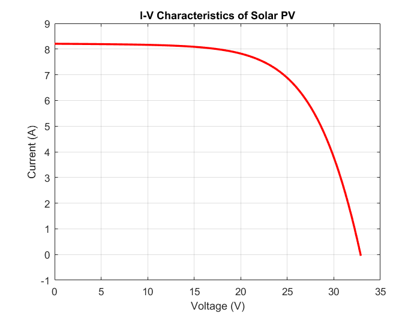
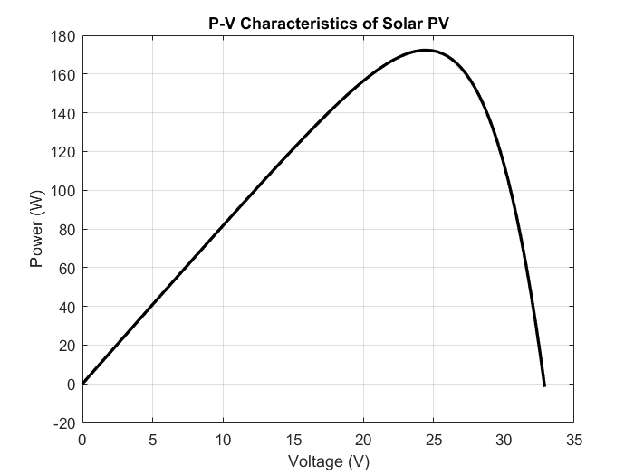
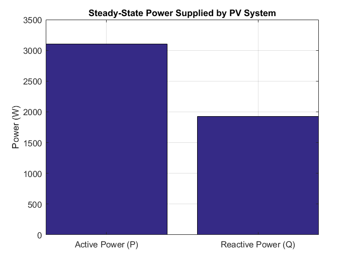

Contents
clear all; close all; % Hussain Tak
Step 1: Solar PV System Modeling
Constants
K = 1.38065e-23; % Boltzmann Constant q = 1.602e-19; % Electron's Charge Iscn = 8.21; % Short Circuit Current (A) Vocn = 32.9; % Open Circuit Voltage (V) Ns = 72; % Number of series cells per panel T = 25 + 273; % Operating Temperature in Kelvin Gn = 1000; % Irradiance at STC (W/m^2) G = 1000; % Actual Irradiance (W/m^2) Rs = 0.15; % Series resistance (?) Rp = 500; % Parallel resistance (?) % PV Model Calculations Vtn = Ns * ((K * T) / q); I0 = Iscn / (exp(Vocn / (2 * Vtn)) - 1); % Reverse saturation current Ipv = (G / Gn) * Iscn; % Photocurrent % Generate I-V Curve using Newton-Raphson V = linspace(0, Vocn, 100); I = zeros(size(V)); for k = 1:length(V) Ik = Ipv; % Initial guess for current for j = 1:10 % Newton-Raphson iterations f = Ik - Ipv + I0 * (exp((V(k) + Ik * Rs) / (Vtn * 2)) - 1) + (V(k) + Ik * Rs) / Rp; df = 1 + I0 * (Rs / (Vtn * 2)) * exp((V(k) + Ik * Rs) / (Vtn * 2)) + Rs / Rp; Ik = Ik - f / df; end I(k) = Ik; end % Power Calculation P = V .* I; [~, idx] = max(P); Vmp_single = V(idx); % MPP Voltage of One Panel Ipv_mpp = I(idx); Ppv_mpp = P(idx); % Calculate Number of Panels in Series Vpv_target = 440; % Desired input voltage for the boost converter N_panels = ceil(Vpv_target / Vmp_single); Vpv = N_panels * Vmp_single; % Adjusted MPP voltage for the full array % Total PV Active Power Generation P_pv = Ppv_mpp * N_panels;
Step 2: Reactive Power Calculation
Assume PV inverter operates at a specific power factor
pf = 0.85; % Can be adjusted (leading or lagging) S_pv = P_pv / pf; % Apparent power of inverter Q_pv = sqrt(S_pv^2 - P_pv^2); % Reactive power calculation % Ensure reactive power is within inverter capacity Q_pv = min(Q_pv, S_pv);
Step 3: Boost Converter Modeling
Vdc_target = 800; % Target output voltage D = 1 - (Vpv / Vdc_target); D = min(max(D, 0.5), 0.7); % Limit duty cycle Vdc_actual = Vpv / (1 - D); % Boosted voltage I_L = P_pv / Vpv;
Step 4: Inverter Conversion and Grid Synchronization
V_grid = 400;
M = (V_grid * sqrt(2)) / Vdc_actual;
M = min(max(M, 0), 1); % Ensure M is within range
Step 5: Power Exchange with Grid
P_steady_state = P_pv; % PV fully supplies active power Q_steady_state = Q_pv; % PV also supplies reactive power % After calculating P_pv and Q_pv in pv_model.m save('pv_data.mat', 'P_pv', 'Q_pv'); % Save to a .mat file
Step 6: Plot Results
Step 6: Plot Results
figure(1); plot(V, I, 'r', 'LineWidth', 2); xlabel('Voltage (V)'); ylabel('Current (A)'); title('I-V Characteristics of Solar PV'); grid on; figure(2); plot(V, P, 'k', 'LineWidth', 2); xlabel('Voltage (V)'); ylabel('Power (W)'); title('P-V Characteristics of Solar PV'); grid on; figure(3); bar([P_steady_state, Q_steady_state]); set(gca, 'XTickLabel', {'Active Power (P)', 'Reactive Power (Q)'}); ylabel('Power (W)'); title('Steady-State Power Supplied by PV System'); grid on;



Print results
fprintf('\n------ PV Power Supply ------\n'); fprintf('Total Active Power Supplied by PV: %.2f W\n', P_steady_state); fprintf('Total Reactive Power Supplied by PV: %.2f VAR\n', Q_steady_state); fprintf('Grid Voltage: %.2f V\n', V_grid); fprintf('Boost Converter Output Voltage: %.2f V\n', Vdc_actual); fprintf('Inverter Modulation Index: %.2f\n', M);
------ PV Power Supply ------ Total Active Power Supplied by PV: 3101.20 W Total Reactive Power Supplied by PV: 1921.95 VAR Grid Voltage: 400.00 V Boost Converter Output Voltage: 885.31 V Inverter Modulation Index: 0.64